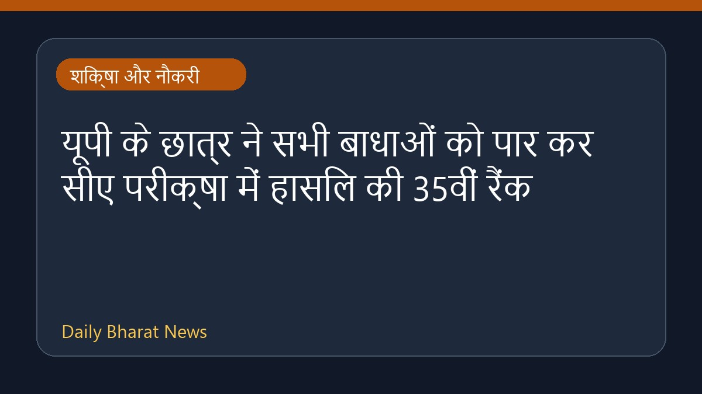

यूपी के छात्र ने सभी बाधाओं को पार कर सीए परीक्षा में हासिल की 35वीं रैंक

नौकरी के संघर्ष और आंख के ऑपरेशन जैसी गंभीर स्वास्थ्य समस्याओं के बावजूद, उत्तर प्रदेश के एक मेधावी छात्र ने चार्टर्ड अकाउंटेंट (सीए) की परीक्षा में शानदार सफलता हासिल की है। उसने अपनी कड़ी मेहनत और दृढ़ संकल्प के बल पर ऑल इंडिया रैंक 35 प्राप्त की है। इस कठिन सफर के दौरान उसे कई प्रकार की परेशानियों का सामना करना पड़ा, लेकिन उसने हार नहीं मानी और अपनी पढ़ाई जारी रखी। उसकी इस उल्लेखनीय उपलब्धि से परिवार और क्षेत्र में खुशी का माहौल है।
मूल स्रोत: Education News Sources
Despite Job Struggles, Eye Surgery, This UP Boy Clears CA Exam With All India Rank 35 - NDTV ↗
Despite Job Struggles, Eye Surgery, This UP Boy Clears CA Exam With All India Rank 35 - NDTV ↗